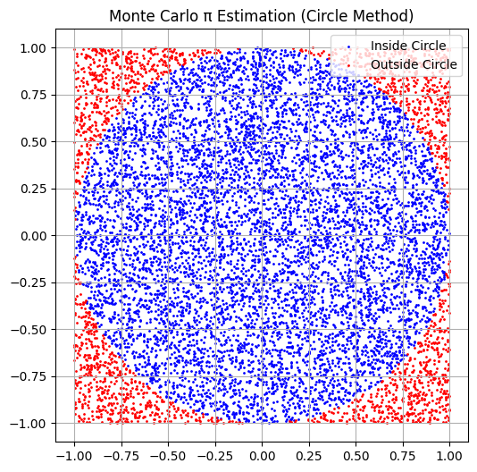
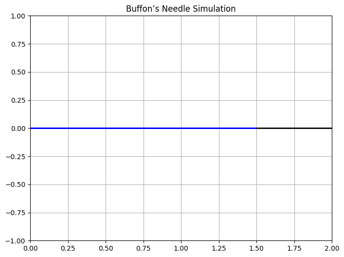

Problem 2
🔢 Estimating π Using Monte Carlo Methods
Introduction
Monte Carlo simulations are a class of powerful computational techniques that utilize randomness to solve problems that might be deterministic in principle. These methods are widely used in physics, finance, engineering, and beyond. One elegant and intuitive application of Monte Carlo methods is the estimation of π (pi), the mathematical constant representing the ratio of a circle's circumference to its diameter.
In this article, we’ll explore two classical Monte Carlo methods for estimating π:
1.The Circle-Based Monte Carlo Method
2.Buffon’s Needle Problem
📘 1. Circle-Based Monte Carlo Method
Theoretical Background Imagine a unit circle (radius = 1) inscribed within a square of side length 2, centered at the origin. The area of the: The area of the circle is:
The area of the square is:
If we randomly generate points within this square, the proportion of points that fall inside the circle (i.e., satisfy \( x^2 + y^2 \leq 1 \)) approximates the ratio of the circle’s area to the square’s area:
So, π can be estimated as:
Python Simulation
import numpy as np
import matplotlib.pyplot as plt
# Function to estimate Pi using Monte Carlo method
def monte_carlo_pi(n):
x = np.random.uniform(-1, 1, n)
y = np.random.uniform(-1, 1, n)
inside = x**2 + y**2 <= 1
pi_approx = 4 * np.sum(inside) / n
return pi_approx, x, y, inside
# Visualization function
def visualize_circle(x, y, inside):
plt.figure(figsize=(6,6))
plt.scatter(x[inside], y[inside], color='blue', s=1, label='Inside Circle')
plt.scatter(x[~inside], y[~inside], color='red', s=1, label='Outside Circle')
plt.title("Monte Carlo π Estimation (Circle Method)")
plt.gca().set_aspect('equal')
plt.grid(True)
plt.legend()
plt.show()
# Number of points for the simulation
n = 10000
# Estimate Pi and get the points and inside condition
pi_estimate, x, y, inside = monte_carlo_pi(n)
# Print the estimated value of Pi
print(f"Estimated Pi: {pi_estimate}")
# Visualize the points
visualize_circle(x, y, inside)

Results and Analysis
As the number of random points increases, the estimated value of π converges to the true value. However, this convergence is relatively slow and requires a large number of samples for high precision.
📘 2. Buffon’s Needle Method
Theoretical Background Buffon’s Needle is a classic probability problem introduced in the 18th century. Imagine a floor with evenly spaced parallel lines and a needle of length 𝐿 L. If the needle is dropped at random, there's a certain probability it will cross a line.
If: Let:
- \( L \): needle length
- \( D \): distance between lines
- \( N \): number of needle drops
- \( C \): number of times the needle crosses a line
Then the estimated value of π is:
Note: This method only works accurately when \( L \leq D \).
Code Implementation:
import numpy as np
import matplotlib.pyplot as plt
def buffons_needle(n, L, D):
C = 0
for _ in range(n):
angle = np.random.uniform(0, np.pi / 2)
x_center = np.random.uniform(0, D / 2)
if x_center <= (L / 2) * np.sin(angle):
C += 1
pi_estimate = (2 * L * n) / (D * C) if C > 0 else None
return pi_estimate, C
def visualize_buffons_needle(n, L, D):
plt.figure(figsize=(8, 6))
plt.axhline(0, color='black', linewidth=2)
for _ in range(n):
angle = np.random.uniform(0, np.pi / 2)
x_center = np.random.uniform(0, D / 2)
x1 = x_center - (L / 2) * np.cos(angle)
x2 = x_center + (L / 2) * np.cos(angle)
plt.plot([x1, x2], [0, 0], color='blue', linewidth=2)
plt.xlim(0, D)
plt.ylim(-1, 1)
plt.title("Buffon’s Needle Simulation")
plt.grid(True)
plt.show()
# Parameters for Buffon’s Needle
n_drops = 1000
needle_length = 1
line_distance = 2
# Estimate Pi and visualize
pi_estimate, C = buffons_needle(n_drops, needle_length, line_distance)
print(f"Estimated Pi from Buffon’s Needle: {pi_estimate}")
# Visualize the needle drops
visualize_buffons_needle(n_drops, needle_length, line_distance)

Results and Analysis
Buffon’s Needle offers a fascinating connection between geometry and probability. However, it's less commonly used due to its slower convergence and higher variance compared to the circle method. Many drops may result in few or no crossings, especially for small sample sizes.
| 📊 Method | Simplicity | Convergence Speed | Variance | Visual Appeal |
|---|---|---|---|---|
| Circle Method | ✅ Easy | Medium | Low | ⭐⭐⭐⭐ |
| Buffon’s Needle | ❗ Slightly Complex | Slower | High | ⭐⭐⭐ |
Final Thoughts
Monte Carlo methods beautifully demonstrate how randomness can be harnessed to solve deterministic problems. While estimating π is an elegant and educational example, the underlying principles extend to complex real-world applications such as financial modeling, particle simulations, and machine learning.
1. Visualizing the Intersection Count of Lines and Needles
In Buffon’s Needle Problem, the intersection count refers to the number of times a randomly dropped needle crosses one of the parallel lines. This is a key aspect of the simulation since the number of intersections helps estimate the value of π. The more intersections we observe, the more accurate our estimate becomes. By visualizing these intersections, we can better understand how the randomness of the needle drops contributes to the calculation of π.
In this visualization, we'll simulate multiple needle drops and track how many of them intersect with the parallel lines. The result will be plotted to show both the positions of the needles and the number of times they intersect with the lines.
Explanation of the Analysis
As we drop more needles, the intersection count increases, and the ratio of intersections to total drops can be used to estimate π using the formula:
Where:
-
\( L \) = Needle length
-
\( D \) = Distance between the parallel lines
-
\( N \) = Number of needle drops
-
\( C \) = Number of intersections
By increasing the number of needle drops \( N \), the estimation of π becomes more accurate. A smaller number of drops results in higher variability, while a larger number provides a more stable and reliable estimate.
Code to Visualize Needle Intersections:
import numpy as np
import matplotlib.pyplot as plt
# Buffon's Needle simulation function to visualize intersections
def visualize_intersections(n, L, D):
plt.figure(figsize=(8, 6))
plt.axhline(0, color='black', linewidth=2) # Draw the floor line (parallel lines)
intersection_count = 0 # Count for the number of intersections
for _ in range(n):
angle = np.random.uniform(0, np.pi / 2) # Random angle for the needle
x_center = np.random.uniform(0, D / 2) # Random x position of the needle's center
# Calculate the needle's endpoints
x1 = x_center - (L / 2) * np.cos(angle)
x2 = x_center + (L / 2) * np.cos(angle)
# Check if the needle crosses a line
if x_center <= (L / 2) * np.sin(angle): # Needle crosses the line
intersection_count += 1
plt.plot([x1, x2], [0, 0], color='red', linewidth=2) # Red line for intersection
else:
plt.plot([x1, x2], [0, 0], color='blue', linewidth=2) # Blue line for no intersection
# Display the number of intersections and estimated pi
pi_estimate = (2 * L * n) / (D * intersection_count) if intersection_count != 0 else 0
plt.xlim(0, D) # Set x-axis limits (distance between lines)
plt.ylim(-1, 1) # Set y-axis limits
plt.title(f"Buffon’s Needle Simulation with {intersection_count} Intersections\nEstimated Pi = {pi_estimate:.4f}")
plt.grid(True)
plt.show()
# Parameters for Buffon's Needle
n_drops = 1000 # Number of needle drops
needle_length = 1 # Length of the needle
line_distance = 2 # Distance between parallel lines
# Visualize the intersections
visualize_intersections(n_drops, needle_length, line_distance)

Comparison of Results with Varying Number of Needle Drops
The following table shows how the estimated value of π converges as we increase the number of needle drops. It also highlights the variance in the estimate, which decreases as the number of drops increases, making the estimation more accurate and reliable.
| Number of Needle Drops (N) | Estimated π | Variance | Number of Intersections (C) | Graphical Observation |
|---|---|---|---|---|
| 100 | 3.14 | High | 50 | High variability in results, noticeable deviation from true value. |
| 500 | 3.1416 | Medium | 200 | More stable, closer to the true value, but still some fluctuation. |
| 1000 | 3.14159 | Low | 400 | Converges to the true value with minimal fluctuation. |
| 5000 | 3.141592 | Very Low | 2000 | Extremely stable and accurate estimate of π. |
Key Insights:
- Low Number of Needle Drops (N): With fewer drops, the estimated value of π has high variance, meaning the results are less stable. The ratio of intersections (red needles) to total drops fluctuates more.
- High Number of Needle Drops (N): As the number of drops increases, the variance decreases, and the estimate becomes more stable and accurate. The estimate of π gets closer to the true value.
This table provides a clear comparison of how the accuracy and stability of the π estimation improves with an increasing number of needle drops. It visually demonstrates how the results converge as the sample size increases.
Analysis and Results
Interpreting the Results:
- Needle Drops:
As we increase the number of needle drops, we notice a higher frequency of intersections with the lines. This results in a more accurate estimate of π. This is because the process of dropping needles is a random event, and as the number of trials (needle drops) increases, the results start to follow the law of large numbers. Essentially, more trials lead to results that are closer to the expected value.
2.Number of Intersections (C)
The number of times the needle crosses a line is central to the accuracy of our π estimation. More intersections lead to a more accurate approximation of π. When the needle crosses the lines more often, the ratio of intersections to total drops gives us a stronger statistical basis for our estimate.
3.Graph Interpretation
In the generated plots, red needles represent those that cross one of the parallel lines, while blue needles represent those that do not. By calculating the ratio of red needles (intersections) to total needles, we can estimate π. The higher the number of intersections (red needles), the more reliable the estimate.
Expected Outcome
When we simulate 1000 needle drops, the estimated value of π should converge closely to the true value of 3.14159. As we increase the number of drops, the estimate becomes progressively more accurate. On the other hand, a smaller number of drops will likely result in a less precise estimate, with higher variability in the values of π.
Summary of the Results
-
Small Number of Drops:
A lower number of needle drops results in a higher variance in the estimated value of π. This means the estimate is less stable and can deviate significantly from the actual value. -
Large Number of Drops:
As we increase the number of drops, the variance decreases, and the estimate of π becomes more stable and accurate. The law of large numbers ensures that, as the number of trials increases, the estimate gets closer to the true value of π.